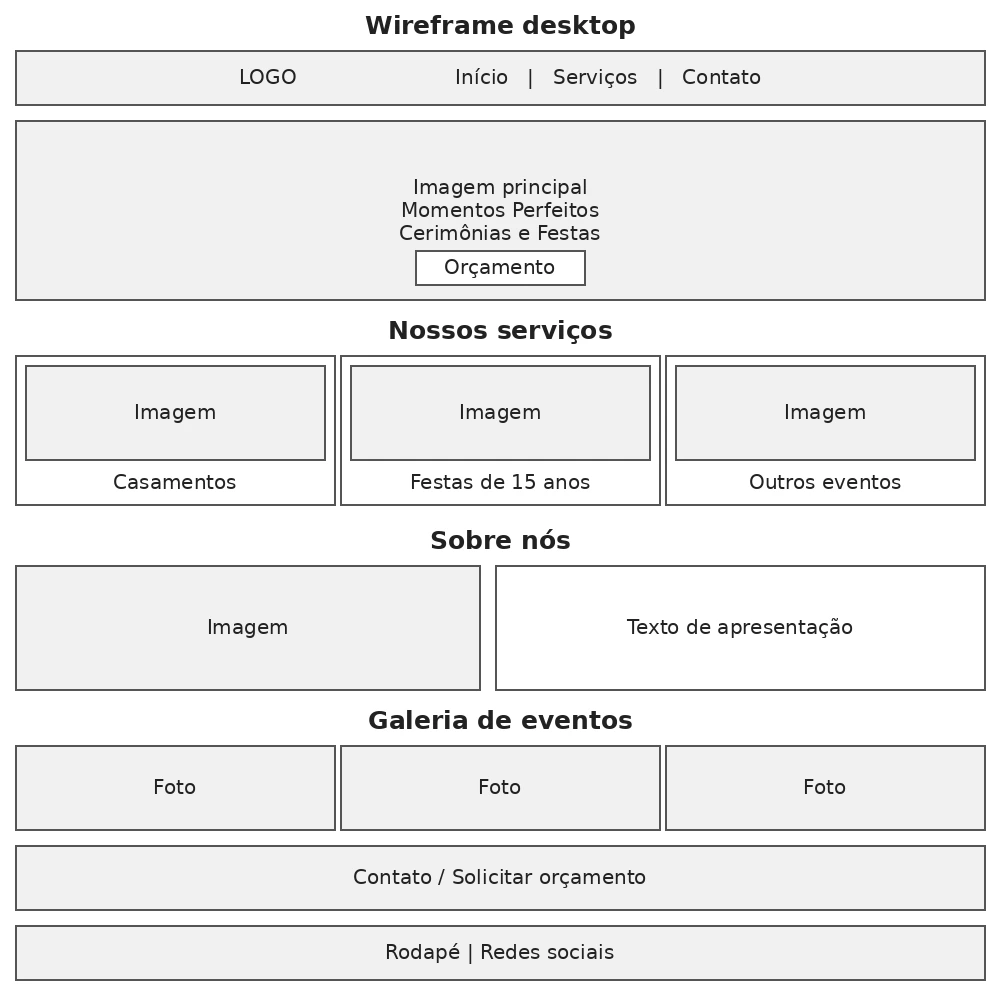
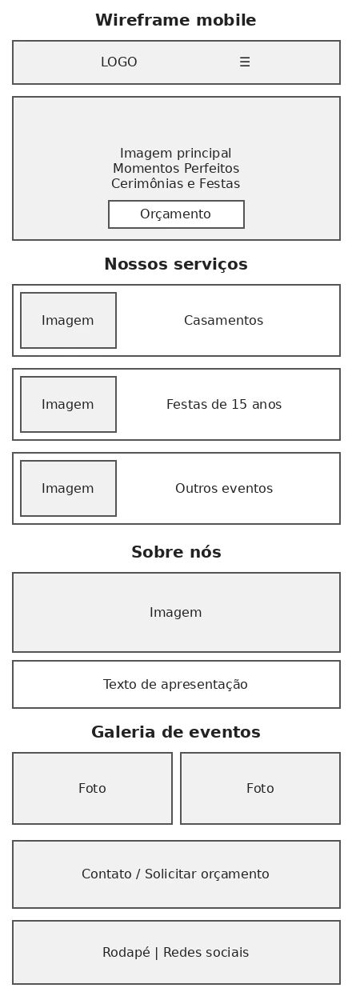

1. Nome do Site
Momentos Perfeitos - Cerimônias e Festas
Escolhi esse nome porque ele representa a proposta de transformar celebrações especiais em momentos únicos e inesquecíveis, por meio do planejamento e da organização de eventos.
2. Finalidade do Site
O site tem como finalidade apresentar serviços de cerimonialista e organização de eventos, como casamentos, festas de 15 anos e outras celebrações.
O site fornecerá informações sobre os serviços oferecidos, uma galeria de fotos e um formulário de contato para solicitação de orçamentos.
3. Cenários
- Quais serviços de cerimonial são oferecidos para casamentos?
- Como posso solicitar um orçamento para meu evento?
- Onde posso visualizar fotos de eventos organizados?
- Quais tipos de eventos a empresa atende?
4. Esquema de Cores
Vinho
#722F37
Cabeçalho, títulos e botões.
Dourado
#C9A84C
Detalhes e elementos decorativos.
Creme
#FAF6F0
Fundo da página.
Preto suave
#1A1A1A
Textos e rodapé.
Branco
#FFFFFF
Fundo das seções e textos sobre cores escuras.
5. Tipografia
Playfair Display
Será utilizada nos títulos e subtítulos do site.
Raleway
Será utilizada nos parágrafos, menus e botões.
Great Vibes
Será utilizada em slogans e frases decorativas.
6. Wireframes
Os wireframes representam a organização inicial dos elementos da página principal em diferentes tamanhos de tela.
Versão Desktop

Versão Mobile
